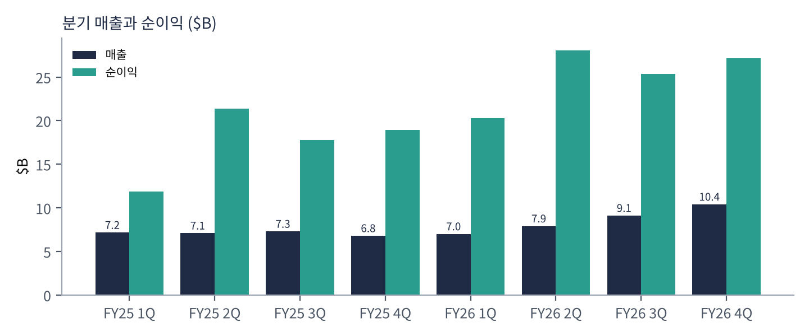
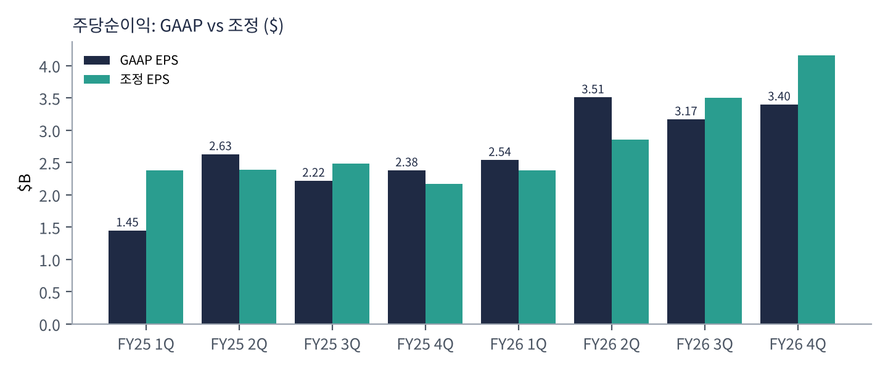
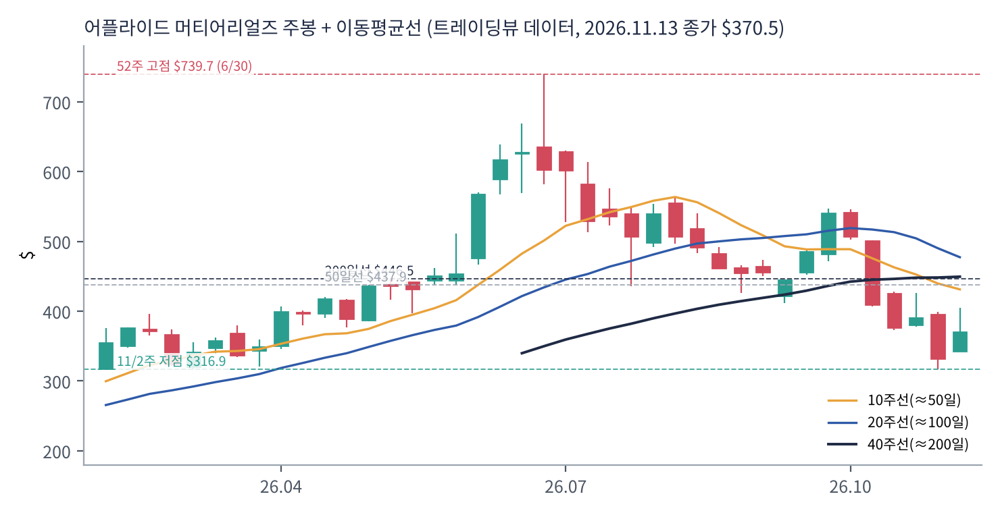
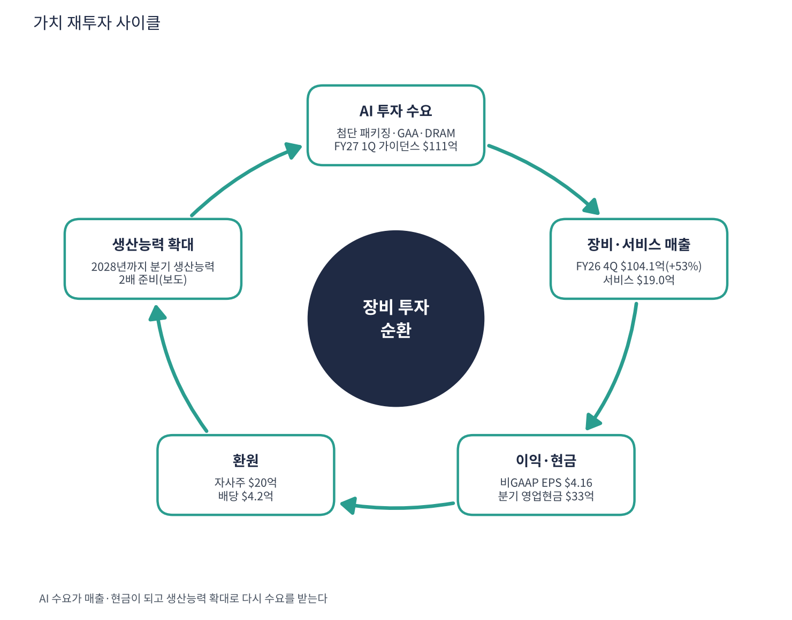

어플라이드 머티어리얼즈는 반도체 웨이퍼 제조 장비(증착·식각·이온주입·검사 등)와 설치 후 서비스를 파는 세계 최대급 장비 회사다. 회계연도는 10월 말에 끝난다. FY26 4분기 매출이 53% 늘어 사상 최고를 기록하고 다음 분기도 $111억으로 제시했지만, 주가는 6월 고점의 절반 수준인 회사다.
| 항목 | 내용 |
|---|---|
| 종목 | Applied Materials (AMAT) · NASDAQ · 반도체 장비 · 본사 미국 캘리포니아주 산타클라라 |
| 시가총액 | 약 $2,940억 · PER 29.4배(GAAP TTM), 조정 28.7배 · P/S 8.83배 (11/13 종가 $370.50) |
| 최근 분기(FY26 4Q, 10월) | 매출 $104.09억(+53%), GAAP EPS $3.40, 비GAAP EPS $4.16(+92%). 비GAAP 총이익률 50.6%, 영업이익률 35.3% |
| 부문(4Q) | 반도체 시스템 $79.96억, 서비스(AGS) $18.96억, 기타(디스플레이 등) $5.17억 |
| 현금·부채 | 현금·단기투자 약 $93억(장기투자 $47.6억 별도), 총차입금 $65.3억, 분기 영업현금 $33억(사상 최고) |
| 가이던스(FY27 1Q) | 매출 $111억 ± $5억, 비GAAP EPS $4.35 ± $0.20. 이 분기는 14주여서 비용이 늘어남 |
| 직책 | 인물 | 역할·특징 |
|---|---|---|
| CEO | 게리 디커슨(Gary Dickerson) | 'AI가 반도체 수요를 계속 키운다'고 실적 발표에서 밝힘 |
| CFO | 브라이스 힐(Brice Hill) | 13분기 연속 총이익률 전년 대비 개선을 설명(보도) |
경영 스타일: '가치 기반 가격과 운영 효율로 이익률을 올린다'. 회사는 총이익률 개선을 장비의 AI 가치와 가격 정책, 운영 레버리지 덕분이라고 설명했다(보도). 4분기에 자사주 $20억과 배당 $4.2억을 환원했다.
게이트올어라운드·첨단 DRAM·패키징에서 공정이 늘어 수요가 커진다. 첨단 패키징 매출은 2026년 70% 넘게 늘 전망(보도).
고객이 8분기 롤링 전망을 더 자세히 공유한다고 밝혔다. 2028년까지 분기 생산능력을 두 배로 늘릴 준비도 한다(보도).
| 분기 | 매출 | 순이익 | EPS | 조정 EPS | 특이 사항 |
|---|---|---|---|---|---|
| FY25 1Q | $71.7억 | $11.8억 | 1.45 | 2.38 | |
| FY25 2Q | $71.0억 | $21.4억 | 2.63 | 2.39 | GAAP이 조정보다 높음(원인 미확인) |
| FY25 3Q | $73.0억 | $17.8억 | 2.22 | 2.48 | |
| FY25 4Q | $68.0억 | $19.0억 | 2.38 | 2.17 | |
| FY26 1Q | $70.1억 | $20.3억 | 2.54 | 2.38 | |
| FY26 2Q | $79.1억 | $28.1억 | 3.51 | 2.86 | |
| FY26 3Q | $91.2억 | $25.4억 | 3.17 | 3.50 | 매출 +25% |
| FY26 4Q | $104.1억 | $27.2억 | 3.40 | 4.16 | 매출 +53%, 조정 EPS +92% |


흐름 요약: 분기 매출은 $71.7억에서 $104.1억으로 늘었다. 전년 대비 성장률은 FY26 1Q -2%, 2Q +11%, 3Q +25%, 4Q +53%로 급가속했다. 조정 EPS는 $2.38에서 $4.16으로 올랐다. 분기 표는 회계연도 기준이다. FY25 2Q는 GAAP EPS가 조정 EPS보다 높아 일회성 이익이 있었던 것으로 보이나 원인은 확인하지 못했다. 영업이익과 분기 설비투자는 구하지 못해 뺐다.
| 부문 | FY26 4Q 매출 | 비중(내 계산) | 비고 |
|---|---|---|---|
| 반도체 시스템 | $79.96억 | 약 77% | 파운드리 로직·DRAM·첨단 패키징 |
| 서비스(AGS) | $18.96억 | 약 18% | 3Q 대비 +22%(전년 대비, 보도) |
| 기타(디스플레이 등) | $5.17억 | 약 5% | 디스플레이는 기타로 이동 |
장비가 전체의 약 77%를 차지하고 서비스가 안정적인 반복 수익을 낸다. FY26 3Q 기준 중국 매출 비중은 28%로 전년 같은 분기 35%에서 낮아졌고, 경영진은 2026 캘린더 연도 중국 매출이 28나노 파운드리 로직 중심으로 늘 것으로 본다(보도).
어플라이드는 '반도체 소재·구조 혁신 전반에 장비를 공급한다'는 위치를 지킨다.
| 축 | 최근 움직임 |
|---|---|
| AI 로직·DRAM | 게이트올어라운드·FinFET 증설, DRAM 투자 |
| 첨단 패키징 | 2026년 매출 70% 이상 성장 전망(보도) |
| 서비스 | AGS 연 20% 이상 성장 전망(보도) |
| 위험 | 중국 비중·수출 규제, 정점 우려 |

| 이동평균 | 값 | 종가 대비 | 해석 |
|---|---|---|---|
| 5일선 | $377.92 | -2.0% | 현재가가 아래 |
| 20일선 | $382.93 | -3.2% | 현재가가 아래 |
| 50일선 | $437.91 | -15.4% | 현재가가 아래 |
| 100일선 | $487.95 | -24.1% | 현재가가 아래 |
| 200일선 | $446.54 | -17.0% | 현재가가 약 17% 아래 |
주봉 흐름: 2025년 9월 $194~218 → 2026년 1월 $276~327 → 3월 $325~357 → 6월 고점 $739.7 → 9월 $454~540 → 10월 $377~409 → 11월 둘째 주 $316.9(저점) → 11/13 주 $370.5. 모든 이동평균선이 현재가 위에 있다.
| 규칙 | 기준 | 현재 값 | 신호 |
|---|---|---|---|
| 장기 추세 필터 | 종가 vs 200일선 | $370.50 < $446.54 | 매도 |
| 중장기 교차 | 50일선 vs 200일선 | $437.91 < $446.54 | 매도 |
| 단기 교차 | 20일선 vs 50일선 | $382.93 < $437.91 | 매도 |
| 돈키언 채널 | 55일 고가 $547.25 / 저가 $316.95 | 중간값 $432.10 아래 | 매도 |
| 1개월 모멘텀 | 21거래일 수익률 | -13.8% (기준 $430.01) | 매도 |
| 3개월 모멘텀 | 63거래일 수익률 | -30.8% (기준 $535.31) | 매도 |
| 6개월 모멘텀 | 126거래일 수익률 | -15.1% (기준 $436.62) | 매도 |
| 12개월 모멘텀 | 252거래일 수익률 | +60.6% (기준 $230.73) | 매수 |
| 종합 (8개 평균) | -0.75 | 강한 매도 |
해석: 8개 신호 중 7개가 매도, 12개월 모멘텀만 매수(점수 -0.75)다. 14일 ATR $27.32 (7.4%)로 변동폭이 크다.
| 가격 | 무엇이 바뀌나 | 의미 |
|---|---|---|
| $382.9 돌파 | 20일선 | 20/50 신호는 50일선($437.9)도 넘어야 매수로 전환 |
| $430.0 돌파 | 1개월 기준가 | 1개월 모멘텀 매도 → 매수 |
| $432.1 돌파 | 돈키언 중간값 | 채널 신호 매도 → 매수 |
| $446.5 돌파 | 200일선 | 장기 추세 신호 매도 → 매수 |
| 구분 | 가격대 | 근거 |
|---|---|---|
| 저항 1 | $383 ~ 438 | 20일선 $382.9, 50일선 $437.9 |
| 저항 2 | $447 ~ 488 | 200일선 $446.5, 100일선 $488.0 |
| 지지 1 | $316.9 | 11월 둘째 주 저점 |
| 하방 | $316.9 이탈 시 | 직전 기준 가격대 약함(2026년 3월 $320 부근) |
7개 신호가 매도라 신규 진입은 보류한다. 20일선($383)과 200일선($447)을 되찾고 신호가 바뀌면 계획 비중의 30%만 진입한다. 이미 보유 중이면 $317 종가 이탈 시 정리한다. 2027.2.18 실적이 확인 지점이다.
| 악재 요인 | 내용 | 강도 |
|---|---|---|
| 사이클 정점 우려 | 매출 +53%인데 주가는 고점 대비 -50% | 높음 |
| 중국 비중·수출 규제 | FY26 3Q 중국 매출 비중 28%, 규제 영향(보도) | 중간 |
| 14주 분기 비용 | FY27 1Q 비용이 평소보다 크게 늘 것(보도) | 중간 |
| 밸류에이션 | PER 29.4배, EV/EBITDA 약 24.5배 | 중간 |
| 추세 | CTA -0.75, 7개 신호 매도 | 높음 |
| 티커 | 회사 | 시가총액 | PER(TTM) | PEG | P/S | EPS 성장(YoY) |
|---|---|---|---|---|---|---|
| AMAT | 어플라이드 머티어리얼즈 | $294B | 29.4배 | 0.78 | 8.83배 | +37% |
| LRCX | 램리서치 | $282B | 33.6배 | 0.70 | 11.24배 | +48% |
| KLAC | KLA | $198B | 38.1배 | 1.49 | 14.23배 | +26% |
| TER | 테라다인 | $39B | 28.6배 | 0.13 | 8.31배 | +217% |
| ASML | ASML | $565B | 36.8배 | 0.71 | 12.53배 | +52% |
| MU | 마이크론 | $881B | 10.5배 | – | 6.88배 | +879% |
AMAT는 조정 EPS 기준, 나머지는 GAAP 기준(내 계산). TER·MU는 기저 효과로 PEG 비교가 어렵다. 비교 결론: AMAT PEG 0.78은 KLAC(1.49)보다 낮고 LRCX·ASML과 비슷하다.
어플라이드는 현금이 차입금보다 많다. 현금과 단기투자 약 $93억에 장기투자 $47.6억이 더 있고, 총차입금은 $65.3억이다.
| 지표 | 값 | 계산·출처 | 해석 |
|---|---|---|---|
| 현금 등 | 약 $93억 | 스캐너, 실적 자료(현금 $72.4억 + 단기투자 $21.0억) | 장기투자 $47.6억 별도 |
| 총차입금 | $65.3억 | 실적 자료(단기 $13.0억 + 장기 $52.3억) | 순현금 약 $28억 |
| TTM 잉여현금흐름 | 약 $62억 | 스캐너 | 시총 대비 2.1% |
| TTM EBITDA | 약 $119억 | 스캐너 | EBITDA 마진 약 35%(내 계산) |
| 기준 | 값 | 비고 |
|---|---|---|
| P/S (TTM) | 8.83배 | 스캐너. TTM 매출 $344.5억 기준 내 계산은 8.5배 |
| P/FCF | 약 47배 | 시총 $2,940억 ÷ TTM 잉여현금 $62억(내 계산) |
| 동종 | LRCX 11.2, KLAC 14.2, TER 8.3, ASML 12.5, MU 6.9 | 11/13 스캐너 |
해석: P/S는 동종 중 낮은 편이다. 스트레스 가정(내 가정): FY27 1Q 가이던스 EPS $4.35를 4배한 연환산 $17.40에 PER 20배면 $348(-6%), 25배면 $435(+17%), 30배면 $522(+41%)다. 현재가는 PER 약 21배에 해당한다.
| 지표 | 값 | 판정 |
|---|---|---|
| PER (GAAP TTM) | 29.4배 | 트레이딩뷰, GAAP TTM EPS $12.62 |
| PER (조정 TTM) | 28.7배 | 최근 4분기 조정 EPS 합 $12.90(내 계산) |
| EV / EBITDA | 약 24.5배 | EV ≈ 시총 $2,940억 + 차입금 $65억 − 현금 $93억 = $2,912억, ÷ TTM EBITDA $119억(내 계산) |
| 방식 | PER | EPS 성장률 | PEG | 판정 |
|---|---|---|---|---|
| 트레이딩뷰 (GAAP TTM) | 29.4배 | +45.5% | 0.65 | 투자 적격 |
| 조정 EPS 기준 | 28.7배 | +36.9% | 0.78 | 투자 적격 |
| 조정 TTM $12.90 ÷ 직전 TTM $9.42 | – | – | – | 직전: FY25 1Q 2.38 + 2Q 2.39 + 3Q 2.48 + 4Q 2.17 |
판정: 조정 PEG 0.78로 기준(1.0) 이하 투자 적격, 적극 매수 기준(0.5)에는 못 미침. GAAP 성장률에는 FY25 2Q의 일회성 이익 영향이 있어 보수적으로 조정 EPS 기준을 대표값으로 쓴다. FY27 1Q 가이던스 EPS $4.35는 전년 같은 분기($2.38) 대비 크게 높아 단기 성장률은 더 높게 유지된다.

어플라이드의 사이클은 AI 투자 수요 → 장비·서비스 매출 → 이익·현금 → 환원 → 생산능력 확대다. 현금으로 환원하고 생산능력을 키워 다음 수요를 받는다. 대부분의 고리가 강하다.
| 고리 | 현재 숫자 | 고리 강도 | 약해지는 신호 |
|---|---|---|---|
| ① AI 투자 수요 | FY27 1Q 가이던스 $111억 | 강함 | 가이던스 하향 |
| ② 장비·서비스 매출 | FY26 4Q +53%, 서비스 $19.0억 | 강함 | 성장률 둔화 |
| ③ 이익·현금 | 비GAAP EPS $4.16, 영업현금 $33억 | 강함 | 마진 하락 |
| ④ 환원 | 자사주 $20억, 배당 $4.2억 | 강함 | 환원 축소 |
| ⑤ 생산능력 확대 | 2028년까지 2배 준비(보도), 14주 분기 비용 | 보통 | 고객 투자 연기 |
구조: ①~④가 강하고 ⑤가 진행 중이다. 확인 지점은 생산능력 확대가 수요 둔화 시 부담이 되지 않는지다.